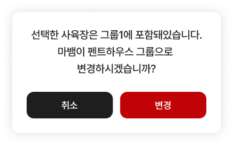

20 · 그룹 이동 확인창
19번 수정·확정 완료 · 다음 검수
수정 제안
① 취소·변경 글자18→16pt, 상하 여백14→8pt로 잘림 해소
② 모서리 반경16→12pt
③ ‘관찰 카메라은’ 조사와 ‘새 그룹 그룹으로’ 중복 정리
확인창 코드는 아직 수정 전입니다.
Figma · 팝업 원본
20 · 현재 앱 팝업 확대 팝업 크기·본문 스타일·버튼 배치는 맞지만 버튼 글자 박스가16pt로 줄어 잘립니다. 동적 기기/그룹 이름은 샘플 차이입니다.
전체 제품 위젯 캡처
수치와 원인·수정 제안